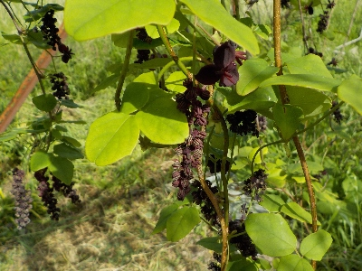
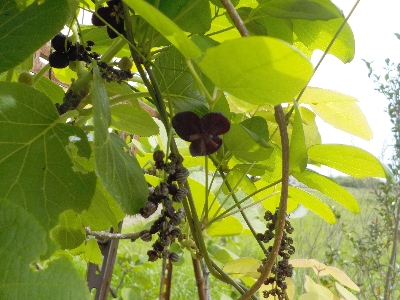
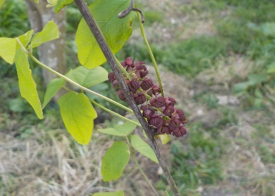

アケビの花が沢山咲いていますが、実は期待していません。
更新日 : 2025/04/27

去年も花が沢山咲きましたが実が出来なかったので、今年も実が出来ない可能性があるなと思っています。
去年は期待しすぎてガッカリだったので、今年は期待しないようにしています。
更新日 : 2025/04/27
更新日 : 2025/04/27

去年も花が沢山咲きましたが実が出来なかったので、今年も実が出来ない可能性があるなと思っています。
去年は期待しすぎてガッカリだったので、今年は期待しないようにしています。
更新日 : 2024/04/27

最初は小さいツブツブだけでしたが、上の方に少し大きな花が咲きました。これが雌花ですね。
この花は色が濃いのでミツバアケビみたいです。
更新日 : 2024/04/13

これは本当にアケビの花なのかな？
小さいツブツブがあるだけです。こんなんが大きな実になる感じがしません。
あと、またツルが細いので実が出来たら重さでツルが切れそうです。
アケビの花は変わった形をしていますね。